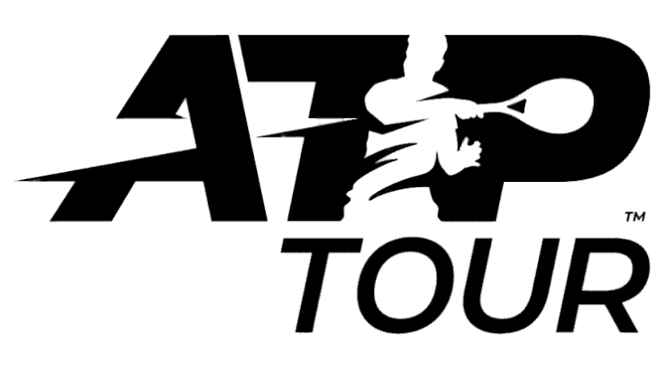
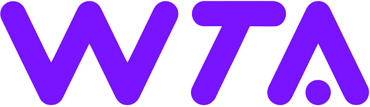

ROGER FEDERER
Roger Federer
My all-time favorite player. Twenty Grand Slam titles, eight at Wimbledon, and a style of play that made tennis look effortless. He retired in 2022, at the Laver Cup in London.
rogerfederer.com Daniel de OliveiraInstitute of Computing / UFF
UFFeScience
Daniel de OliveiraInstitute of Computing / UFF
UFFeScience
Outside of research and teaching, two sports take up most of my free time: tennis, which I follow closely on both the men's and women's tours, and football, where my heart belongs to Fluminense.
Tennis is my favorite sport to watch and follow. These are the places I go for results, rankings, and tournament news, and the player who made me fall in love with the game.
My all-time favorite player. Twenty Grand Slam titles, eight at Wimbledon, and a style of play that made tennis look effortless. He retired in 2022, at the Laver Cup in London.
rogerfederer.com
The official site of the men's professional tour: live scores, rankings, the tournament calendar, and player profiles.
atptour.com
The official site of the Women's Tennis Association, with results, rankings, and news from the women's tour.
wtatennis.com